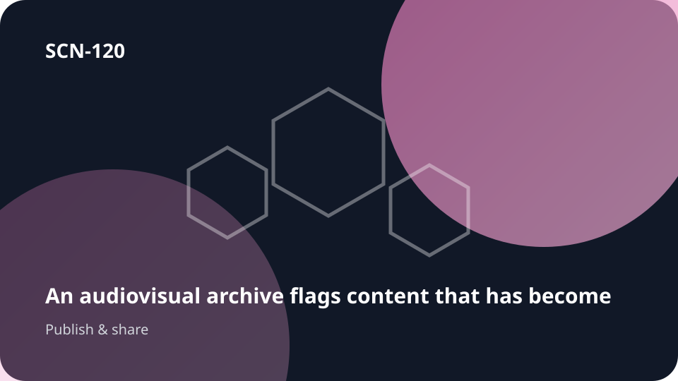

Starts withKnowledge that needs to reach a public

SCN-120 · Disseminate & Connect to the Public
An audiovisual archive flags content that has become outdated
Published media must remain connected to the knowledge and version it depends on so outdated material can be flagged or revised.
← Back to the full MosaicWhat can get lost
Once published, content often becomes detached from its sources, versions, and the people able to update it.
Koali keeps connected
The value is not any one isolated feature. It is preserving the same context across media → … → update/annotation so knowledge, people, choices, work, and memory remain connected.
Flow
media → source/version → change → alert → update/annotation
Transferable toEducation · Science · Public Service